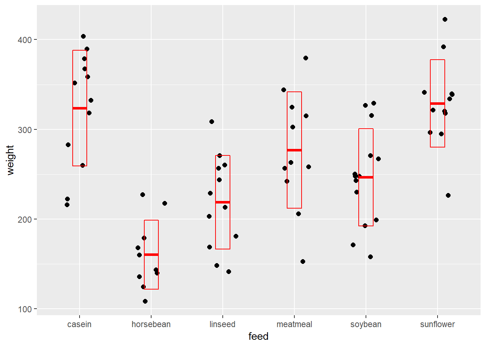

Chapter 24 One-way ANOVA CR
library(magrittr)
library(tidyverse)
library(ggformula)
library(DescTools)
library(ez)
library(lsr)If you haven’t yet read the ANOVA big picture, this is worth reading
24.1 Using ezANOVA
R has several functions to run ANOVA. In this course we’re going to use ezANOVA from the ez package because I feel the syntax for defining CR vs RM is pretty helpful.
In this document, we’ll run through an analysis of a one-way completely randomized ANOVA data set as ‘how to’ example.
24.2 The chickwt data set
This data set in R’s base. It compares the influence of 6 different types of food sources on chick weight. There is one predictor variable, the factor ‘feed’, which is tested at 6 different levels (the various food sources).
There has one continuous outcome variable (weight). We can assume the chicks are outbred, and thus not intrinsically-related, and that they have been randomly assigned to a level of feed, and have been weighed after a period of time.
This is a classic one-way completely randomized ANOVA design. This chapter illustrates how to go through an analysis of the data.
24.2.1 Inspect the data
The next few scripts involve inspecting the data set, which should always be done prior to running any statistical tests.
data(chickwts)
#take a look at the data structure, depending upon how you like to view data
str(chickwts)## 'data.frame': 71 obs. of 2 variables:
## $ weight: num 179 160 136 227 217 168 108 124 143 140 ...
## $ feed : Factor w/ 6 levels "casein","horsebean",..: 2 2 2 2 2 2 2 2 2 2 ...chickwts## weight feed
## 1 179 horsebean
## 2 160 horsebean
## 3 136 horsebean
## 4 227 horsebean
## 5 217 horsebean
## 6 168 horsebean
## 7 108 horsebean
## 8 124 horsebean
## 9 143 horsebean
## 10 140 horsebean
## 11 309 linseed
## 12 229 linseed
## 13 181 linseed
## 14 141 linseed
## 15 260 linseed
## 16 203 linseed
## 17 148 linseed
## 18 169 linseed
## 19 213 linseed
## 20 257 linseed
## 21 244 linseed
## 22 271 linseed
## 23 243 soybean
## 24 230 soybean
## 25 248 soybean
## 26 327 soybean
## 27 329 soybean
## 28 250 soybean
## 29 193 soybean
## 30 271 soybean
## 31 316 soybean
## 32 267 soybean
## 33 199 soybean
## 34 171 soybean
## 35 158 soybean
## 36 248 soybean
## 37 423 sunflower
## 38 340 sunflower
## 39 392 sunflower
## 40 339 sunflower
## 41 341 sunflower
## 42 226 sunflower
## 43 320 sunflower
## 44 295 sunflower
## 45 334 sunflower
## 46 322 sunflower
## 47 297 sunflower
## 48 318 sunflower
## 49 325 meatmeal
## 50 257 meatmeal
## 51 303 meatmeal
## 52 315 meatmeal
## 53 380 meatmeal
## 54 153 meatmeal
## 55 263 meatmeal
## 56 242 meatmeal
## 57 206 meatmeal
## 58 344 meatmeal
## 59 258 meatmeal
## 60 368 casein
## 61 390 casein
## 62 379 casein
## 63 260 casein
## 64 404 casein
## 65 318 casein
## 66 352 casein
## 67 359 casein
## 68 216 casein
## 69 222 casein
## 70 283 casein
## 71 332 caseinIt is also helpful to calculate some descriptive stats for inspection:
cw1 <- chickwts %>%
group_by(feed) %>%
summarise(
mean= mean(weight),
median=median(weight),
sd= sd(weight),
n = n(),
var=var(weight)
)
cw1## # A tibble: 6 x 6
## feed mean median sd n var
## <fct> <dbl> <dbl> <dbl> <int> <dbl>
## 1 casein 324. 342 64.4 12 4152.
## 2 horsebean 160. 152. 38.6 10 1492.
## 3 linseed 219. 221 52.2 12 2729.
## 4 meatmeal 277. 263 64.9 11 4212.
## 5 soybean 246. 248 54.1 14 2930.
## 6 sunflower 329. 328 48.8 12 2385.The means and medians are about equal within each group. That’s a quick and dirty way to suggest no skew. Overall sample size is 71, distributed as 10-14 replicates per group, it’s a little unbalanced. But within acceptable limits. The variances are not equivalent, but are they unequal? Levene’s test in the ANOVA will provide that answer.
Plot the data for a look. Simply looking at the data graphically goes a long way to ensuring this is a one-way ANOVA design. Jitter plots are a great way to see group data like this. I like the crossbar geom to overlay some summary stats.
ggplot(chickwts, aes(feed, weight))+
geom_jitter(width = 0.2, size=2) +
stat_summary(fun.data = mean_sdl,
fun.args = list(mult=1),
geom="crossbar",
width=0.2,
color="red")
24.3 Run the ANOVA
We can imagine designing an experiment like this with either of 3 experimental objectives in mind.
Perhaps we’re interested mostly in whether any feeds are better than others for achieving weight gain? We could answer that by making all possible pairwise comparisons. Since there are 6 levels of the factor feed, that would involve \(C=\frac{6(6-1)}{2}=15\) comparisons(!!)
Imagine casein is the standard feed, and we wish to know if any of the other feeds differ from this standard? We would compare casein to every feed. That would involve only 5 comparisons.
Perhaps we just want to know if any of the feeds differ in causing weight gain, but we aren’t interested in which specific feeds differ? We could answer that question using the F-test result, and not comparing any groups post hoc.
Those objectives are scientifically-driven.
Other than, perhaps, how we order our data in the data set, which of these objectives is true doesn’t influence how we run the ezANOVA function per se. However, the objective will influence which post hoc analysis we conduct.
24.3.1 Run the chickwts One Way ANOVA
First, ezANOVA requires a ‘wid’, which is a unique ID variable for each independent replicate. We need to add one to the chickwts data set. Since all the measures are independent, we’ll just do that by row number. At the same time we’ll convert the integer to a factor so ezANOVA won’t bark at us.
chickwts$ID <- as.factor(1:nrow(chickwts))You should look at R’s help for ezANOVA ?ezANOVA to understand these test arguments. The help page is pretty clear for most of these.
Since we don’t use the term ‘dependent variable’ much in this course, to be clear, ‘dv’ is the outcome response variable.
If the factor is completely randomized, list it as a ‘between’ argument. If the factor is related/repeated measures, list it as a ‘within’ argument.
Notice that ezANOVA is a function. Use it to create a list object called my.ezaov, which has all of the output information. The object name could have been foo. We call specific elements from the my.ezaov object to see the results.
my.ezaov <- ezANOVA(
data = chickwts,
wid = ID,
dv = weight,
between = feed,
type = 2,
return_aov = T,
detailed = T)## Warning: Data is unbalanced (unequal N per group). Make sure you specified
## a well-considered value for the type argument to ezANOVA().## Coefficient covariances computed by hccm()my.ezaov$ANOVA## Effect DFn DFd SSn SSd F p p<.05 ges
## 1 feed 5 65 231129.2 195556 15.3648 5.93642e-10 * 0.5416855my.ezaov$Levene## DFn DFd SSn SSd F p p<.05
## 1 5 65 4389.241 76154.92 0.7492639 0.5896095my.ezaov$aov## Call:
## aov(formula = formula(aov_formula), data = data)
##
## Terms:
## feed Residuals
## Sum of Squares 231129.2 195556.0
## Deg. of Freedom 5 65
##
## Residual standard error: 54.85029
## Estimated effects may be unbalanced24.3.2 Interpreting the One-Way CR ANOVA Output
The ezANOVA output prints 3 list objects by default:
- $ANOVA (which is the first data frame)
- $
Levene's Test for Homogeneity of Variance(which is the 2nd data frame) - $aov (which is the end of the console output)
In fact, there is a great deal more computed that is not printed, which you can visualize in the console by typing str(my.ezaov).
24.3.2.1 $ANOVA: The ANOVA table
For a CR one way ANOVA design, the SS are partitioned as follows, in general: \(SS_{total}=SS_{model}+SS_{residual}\).
In this example, \(SS_{model}= SS_{feed}\).
Thus, the ANOVA table summarizes the feed model.
The DFn = 5 corresponds to the 6 groups, less 1 degree of freedom (one is lost to calculate mean of groups (sort of)) for the model source of variance.
The DFn = 65 corresponds to the degrees of freedom for the residuals (one df is lost per group to calculate group means).
Therefore, this ANOVA tests a feed model against a null F distribution with 5 and 65 degrees of freedom.
\(F=MS_{feed}/MS_{residual}=15.3648\), where \(MS = SS/df\). The SS can be found in the $aov output.
- ges = generalized eta-squared.
ges is an effect size parameter for ANOVA. For this particular experimental design, \(ges=\frac{SS_n}{SS_n+SS_d}\). In other words, ges summarizes the variation associated with the model as a fraction of the total variation in the data.
Thus, 54.16% of the variation in weight is attributable to the different levels of feed in the experiment. In other words, the model explains 54.16% of the variation in the data.
Think of eta-squared, partial eta-squared, and generalized eta-squared as all related to the more commonly understood \(R^2\) of regression. They are each calculated differently, but all related to \(R^2\) in so far as they serve as estimates for how much of the variation is due to the model. ges takes on values from 0 to 1. Higher values indicate a greater degree of the overall variation is due to the factor tested in the experiment.
Having said that, it’s a bit of a Goldilock statistics. You only really begin to appreciate what it means after producing several of them.
24.3.2.2 $aov
This table provides the accounting for the sum of squares and degrees of freedom, while calculating the residual standard error. It is somewhat redundant with the $ANOVA table, though the residual standard error can come in handy.
- DFn=degrees freedom for numerator. k-1, where k = levels of factor.
- DFd=degrees freedom for denominator. n-k, where n = number of independent replicates.
- SSn & SSd = sum of squares for model and residual, respectively
- Residual standard error is a parameter that estimates the precision by which the data fit the model, and is in units of the outcome variable, weight. \(SE\) is the square root of the residual variance: \(S_{y.x}=\sqrt{\frac{SS_{residual}}{df_{residual}}}\)
If \(S_{y.x}\) were zero, there would be no residuals. The data points would all rest at the value of the group means. The data would fit perfectly to a model of 6 group means at their observed values. \(S_{y.x}\) therefore is a descriptive statistic that declares how much error, or the degree by which the data is unexplained by the model. It has some utility for confidence intervals and power analysis.
24.3.2.3 The F test
The scientific prediction for this experiment is that chick weights will vary depending upon the type of feed they are grown on. The null is that their weights will be roughly the same, irrespective of food source.
ANOVA tests this hypothesis through the variance parameter. The question is whether the variance associated with the model, one of 6 different feed group means, is fractionally greater than the residual variance in the sample.
The null statistical hypothesis is that the variance associated with the different levels of feed is less than or equal to the residual variance. Therefore, the alternate hypothesis is the variance associated with feed is greater than residual variance.
\(H_0: MS_{feed}\le MS_{residual}\), \(H_1: MS_{feed}>MS_{residual}\)
Because of the relationship of group means to variance, it is just as valid to express the null hypothesis in terms of the group means, and that can be proven mathematically by a competent statistician:
\(H_0: \mu_a=\mu_b=\mu_c=\mu_d=\mu_e=\mu_f\) Though, strictly, rejecting the null doesn’t mean that all group means differ from each other, it just means that some of them differ. \(H_1: \mu_a\ne\mu_b\ne\mu_c\ne\mu_d\ne\mu_e\ne\mu_f\)
The F statistic of 15.3648 is extreme for a null F distribution of 5 and 65 degrees of freedom. The very low p-value illustrates this extremeness.
The probability of erroneously rejecting the null hypothesis is about 5e-10. We can reject the null and conclude that differences in effect on chick weights exist between this group of feeds.
24.3.2.4 Levene’s test for homogeneity of variance
Levene’s test determines whether there is a substantial level of differences in variance between groups. Levene’s test is run as a check to determine if the groups variance is homogeneous, as homoskedasticity is one of the validity assumptions of ANOVA.
Levene’s test statistic is calculated as follows:
\[W=\frac{(n-k)}{(k-1)}\frac{\sum\limits_{i=1}^{k}n_i(\bar Z_i-\bar Z)^2}{\sum\limits_{i=1}^{k}\sum\limits_{j=1}^{n_i}(Z_{ij}-\bar Z_i)^2}\]
where \(Z_{ij}=|x_{ij}-\bar x_i|\) and \(Z_i\) are the group means and \(\bar Z\) is the overall mean of \(Z_{ij}\).
The null hypothesis of the Levene test is rejected when \(W>F_{(\alpha,\ k-1,\ n-k)}\), where the F is the critical value.
Levene’s test output is a 2nd ANOVA table, and can easily be confused with the ANOVA output. Levene’s test lacks a \(ges\) parameter, nor does it have a column that lists the factor name.
If the Levene’s F value is low and the p-values is high, as is the case here, we can’t reject the null that the variances are the same. Thus, the variance homogeneity assumption is validated.
If this were not the case, you have two options.
Option 1: Simply ignore the result. The luck of the draw with small samples can explain group differences in variance, where none really exists. The impact on your inference will be very modest. What’s more important is that the population you are sampling is normally distributed. Do you have reason to think that is not the case?
Option 2: Transform the data to homogenize outliers and variance, or switch the analysis to a Kruskal-Wallis nonparametric test.
24.4 Post hoc pairwise comparisons
If the ANOVA F test for the factor is extreme you may be interested in knowing which treatment groups differ. That’s achieved by conducting post hoc analysis, which typically involves multiple group comparisons.
In other words, post hoc involves testing several hypotheses simultaneously. Each test risks type1 error. Therefore, post hoc testing should be done in a way that keeps the cumulative, family-wise type1 error rate (FWER) below the type 1 error threshold that was set for the experiment; usually 5%.
24.4.1 Overview of options
Sometimes we do these experiments without any clear plans of what groups we might want to compare. In those cases, we compare every group to all other groups. Doing so will involve \(\frac{k(k-1)}{k}\) comparisons in an experiment with \(k\) groups. That “burns” a lot of alpha, perhaps needlessly, but that’s the price paid for not planning. The tests for that include the Bonferroni (aka Dunn’s) and its cousins, Holm, Hommel, and Hochberg. They differ slightly, and will generate slightly different adjusted p-values given a common set of unadjusted p-values. Choose one.
Step-down tests operate a bit differently but do the same thing in terms of making all comparisons, these including the Tukey HSD and Newman-Keuls.
When we intend to compare all groups back to one level of the factor, thus making only a subset of all possible comparisons, we use Dunnett’s or the FisherLSD. But it’s just as valid to use any other of these methods.
24.4.1.1 Two imperatives in pairwise testing
Since every p-value represents a hypothesis, when simultaneously testing many hypotheses always make adjustments to keep the FWER < 0.05 (or whatever overall type1 error limit you preset for the experiment).
Let your scientific questions drive the comparisons you’ll make, and thus your choice of post hoc test.
I suggest you worry less about the specific post hoc test, or about gamification of p-values, and think more about whether a comparison is scientifically important.
But there are a couple of provisos: 1) Bonferroni (or its cousins) works just fine if you don’t have too many means to compare, 2) Dunnett’s is for comparing two or more means back to a control mean but should not be used in related measures factors, 3) Fishers LSD will give you output to make those one or few key comparison you set out to make, even though you have many other groups in the experiment (ie, several of the other groups are internal controls and not particularly scientifically important).
24.4.1.2 Examples
No p-value adjustment: Sometimes it’s useful to generate p-values that are not corrected for multiple comparisons. For example, although you’ve done a simple ANOVA, the intention all along was to test only one hypothesis between two groups. The pairwise.t.test function produces a matrix of all comparisons, within which you can find the p-value for the comparison of interest.
The script below will generate a matrix of p-values for t tests of all possible comparisons, none of which are adjusted for multiple comparisons. When running the other scripts below, come back to this to see how adjusted p-value methods changes these results
allPairs <- pairwise.t.test(chickwts$weight, chickwts$feed, p.adjust= "none")
allPairs##
## Pairwise comparisons using t tests with pooled SD
##
## data: chickwts$weight and chickwts$feed
##
## casein horsebean linseed meatmeal soybean
## horsebean 2.1e-09 - - - -
## linseed 1.5e-05 0.01522 - - -
## meatmeal 0.04557 7.5e-06 0.01348 - -
## soybean 0.00067 0.00032 0.20414 0.17255 -
## sunflower 0.81249 8.2e-10 6.2e-06 0.02644 0.00030
##
## P value adjustment method: noneThe unadjusted p-value output from the pairwise.t.test function is a matrix, which is important to know when the need arises to pull out specific elements of the analysis.
class(allPairs$p.value)## [1] "matrix"allPairs$p.value## casein horsebean linseed meatmeal soybean
## horsebean 2.067997e-09 NA NA NA NA
## linseed 1.493344e-05 1.522197e-02 NA NA NA
## meatmeal 4.556672e-02 7.478012e-06 1.347894e-02 NA NA
## soybean 6.654079e-04 3.246269e-04 2.041446e-01 0.17255391 NA
## sunflower 8.124949e-01 8.203777e-10 6.211836e-06 0.02643548 0.0002980438To quickly scan which comparisons are below the p < 0.05 threshold we can apply this custom extreme function across the matrix:
extreme <- function(x){
ifelse(x < 0.05, TRUE, FALSE)
}
apply(allPairs$p.value, c(1, 2), extreme)## casein horsebean linseed meatmeal soybean
## horsebean TRUE NA NA NA NA
## linseed TRUE TRUE NA NA NA
## meatmeal TRUE TRUE TRUE NA NA
## soybean TRUE TRUE FALSE FALSE NA
## sunflower FALSE TRUE TRUE TRUE TRUEAll comparisons with Bonferroni adjustment: The Bonferroni correction is the easiest to understand, so I’ll use that to illustrate p-value adjusting. Let \(C\) be the number of possible comparisons for a total of \(k\) groups in the experiment. An adjusted type 1 error threshold for each comparison is: \[\alpha_k=\frac{\alpha}{C}\]
Thus, in an experiment with 15 possible comparisons, the adjusted type1 error threshold for each comparison would be \(\alpha_K\) = 0.05/15 = 0.003333.
The adjusted p-value functions, however, makes the correction and then recalibrate the p-values back to the confidence level of choice. This can be a bit confusing for the first time. But you’ll note that the net effect is to increase each p-value. Some that were below the threshold unadjusted are greater than the threshold after the adjustment.
For example, you can see that the p-values adjusted using the Bonferroni correction below are all higher than they were above, when unadjusted.
bonf.adjustedAllpairs <- pairwise.t.test(chickwts$weight, chickwts$feed, alternative = "two.sided", p.adjust = "bonferroni")
bonf.adjustedAllpairs##
## Pairwise comparisons using t tests with pooled SD
##
## data: chickwts$weight and chickwts$feed
##
## casein horsebean linseed meatmeal soybean
## horsebean 3.1e-08 - - - -
## linseed 0.00022 0.22833 - - -
## meatmeal 0.68350 0.00011 0.20218 - -
## soybean 0.00998 0.00487 1.00000 1.00000 -
## sunflower 1.00000 1.2e-08 9.3e-05 0.39653 0.00447
##
## P value adjustment method: bonferroniAnd here’s a quick scan for which of these are now below a FWER p < 0.05. Note how a handful of comparisons that were scored extreme by this simple test above, without a p-value adjustment, are no longer extreme with the p-value adjustment.
extreme <- function(x){
ifelse(x < 0.05, TRUE, FALSE)
}
apply(bonf.adjustedAllpairs$p.value, c(1, 2), extreme)## casein horsebean linseed meatmeal soybean
## horsebean TRUE NA NA NA NA
## linseed TRUE FALSE NA NA NA
## meatmeal FALSE TRUE FALSE NA NA
## soybean TRUE TRUE FALSE FALSE NA
## sunflower FALSE TRUE TRUE FALSE TRUEOptional methods in these functions for the Bonferroni correction are “holm”, “hochberg” and “hommel”, each calculates p-value adjustments in slightly different ways. They are each considered slightly more liberal versions of the “bonferroni”.
Which is the best? For all practical purposes, none. Choose one early in your career and stick with it forever. What’s most important is to declare in the planning stages which will be used, and stick with it. That’s the best way to keeps it unbiased. You don’t want to ever find yourself interating through adjustment methods just to find the one that gives a borderline result an asterisk.
Read Wright for more information on the adjustment calculations and performance
Adjusting p-values for subsets of comparisons
Often, we don’t want to burn so much type1 error making scientifically uninteresting comparisons. In such cases, we instead want to compare subsets.
Here’s a three step procedure for doing just that.
Step1: First, run the pairwise.t.test function, setting the argument p.adjust="none". The output includes a matrix of p-values we’ll name allPairs, providing all possible comparisons.
#just repeating from above
allPairs <- pairwise.t.test(chickwts$weight, chickwts$feed, p.adjust= "none")Step2: Select from the allPairs matrix only the p-values that correspond to the comparisons you’d like to make. Name that vector of unadjusted p-values, selectPairs. This takes a bit of cleverness depending on what you want to grab from the matrix.
For example, we only want to compare all of the diets to casein. The comparisons we want are all in the first column. Use your matrix indexing skillz to grab only the unadjusted p-values from that first column:
selectPairs <- allPairs$p.value[, 1]
selectPairs## horsebean linseed meatmeal soybean sunflower
## 2.067997e-09 1.493344e-05 4.556672e-02 6.654079e-04 8.124949e-01Step3: Pass unadjusted p-values in the selectPairs vector into the p.adjust function.
The output of this step is a vector of adjusted p-values for the selected group of comparisons.
adjustedPvalues <- p.adjust(selectPairs, method="bonferroni")
adjustedPvalues## horsebean linseed meatmeal soybean sunflower
## 1.033998e-08 7.466720e-05 2.278336e-01 3.327039e-03 1.000000e+00Which of these are extreme? If it’s not clear by inspection (or too large), use a simple boolean:
adjustedPvalues < 0.05## horsebean linseed meatmeal soybean sunflower
## TRUE TRUE FALSE TRUE FALSEFisher LSD This also doesn’t make adjustments for multiple comparisons. Notice how the p-values are no different than if using the p.adjust="none". Fisher LSD is better than ‘none’ because it provides CI’s on the differences. Note: diff = difference between diet means.
#from the DescTools package
PostHocTest(my.ezaov$aov, method = "lsd")##
## Posthoc multiple comparisons of means : Fisher LSD
## 95% family-wise confidence level
##
## $feed
## diff lwr.ci upr.ci pval
## horsebean-casein -163.383333 -210.287097 -116.4795699 2.1e-09 ***
## linseed-casein -104.833333 -149.554317 -60.1123496 1.5e-05 ***
## meatmeal-casein -46.674242 -92.400318 -0.9481673 0.04557 *
## soybean-casein -77.154762 -120.248980 -34.0605437 0.00067 ***
## sunflower-casein 5.333333 -39.387650 50.0543170 0.81249
## linseed-horsebean 58.550000 11.646237 105.4537634 0.01522 *
## meatmeal-horsebean 116.709091 68.846051 164.5721307 7.5e-06 ***
## soybean-horsebean 86.228571 40.873216 131.5839270 0.00032 ***
## sunflower-horsebean 168.716667 121.812903 215.6204301 8.2e-10 ***
## meatmeal-linseed 58.159091 12.433016 103.8851660 0.01348 *
## soybean-linseed 27.678571 -15.415647 70.7727896 0.20414
## sunflower-linseed 110.166667 65.445683 154.8876504 6.2e-06 ***
## soybean-meatmeal -30.480519 -74.616890 13.6558510 0.17255
## sunflower-meatmeal 52.007576 6.281501 97.7336509 0.02644 *
## sunflower-soybean 82.488095 39.393877 125.5823134 0.00030 ***
##
## ---
## Signif. codes: 0 '***' 0.001 '**' 0.01 '*' 0.05 '.' 0.1 ' ' 1All of the following scripts do adjust p-values for multiple comparisons. Therefore, notice how they increase the p-values we see in the output above. Frequently, “significant” unadjusted p-values become “nonsignificant” after these adjustments.
24.4.1.2.1 Other posthoc tests
Dunnett’s: This post hoc method differs from above because it only does dependent t tests, on a subset of the means. For example, use this when all group means are compared to the negative control mean.
The fewer comparisons don’t spread the allowed FWER as thin as the other options. The following script is configured to compare the means at each level of feed to that for the first listed feed.
Dunnett’s is nice because it gives you the effect size (diff) and the confidence interval limits for the difference, as well.
Note: diff = the difference between diet means for the compared groups.
Here’s an example comparing the weight effect of the various food sources back to casein. Adjusted for mulitple comparisons, horsebean, linseed and soybean each differ from casein.
DunnettTest(weight ~ feed, data = chickwts)##
## Dunnett's test for comparing several treatments with a control :
## 95% family-wise confidence level
##
## $casein
## diff lwr.ci upr.ci pval
## horsebean-casein -163.383333 -223.95852 -102.80815 6.3e-09 ***
## linseed-casein -104.833333 -162.58951 -47.07716 8.6e-05 ***
## meatmeal-casein -46.674242 -105.72847 12.37999 0.1670
## soybean-casein -77.154762 -132.81000 -21.49952 0.0032 **
## sunflower-casein 5.333333 -52.42284 63.08951 0.9995
##
## ---
## Signif. codes: 0 '***' 0.001 '**' 0.01 '*' 0.05 '.' 0.1 ' ' 1Tukey HSD: A method based upon the Studentized range, doing all comparisons, and providing adjusted p-values along with confidence intervals. Used when the question is, “Are there any group differences here at all?”
TukeyHSD(my.ezaov$aov, "feed", ordered = T)## Tukey multiple comparisons of means
## 95% family-wise confidence level
## factor levels have been ordered
##
## Fit: aov(formula = formula(aov_formula), data = data)
##
## $feed
## diff lwr upr p adj
## linseed-horsebean 58.550000 -10.413543 127.51354 0.1413329
## soybean-horsebean 86.228571 19.541684 152.91546 0.0042167
## meatmeal-horsebean 116.709091 46.335105 187.08308 0.0001062
## casein-horsebean 163.383333 94.419790 232.34688 0.0000000
## sunflower-horsebean 168.716667 99.753124 237.68021 0.0000000
## soybean-linseed 27.678571 -35.683721 91.04086 0.7932853
## meatmeal-linseed 58.159091 -9.072873 125.39106 0.1276965
## casein-linseed 104.833333 39.079175 170.58749 0.0002100
## sunflower-linseed 110.166667 44.412509 175.92082 0.0000884
## meatmeal-soybean 30.480519 -34.414070 95.37511 0.7391356
## casein-soybean 77.154762 13.792470 140.51705 0.0083653
## sunflower-soybean 82.488095 19.125803 145.85039 0.0038845
## casein-meatmeal 46.674242 -20.557722 113.90621 0.3324584
## sunflower-meatmeal 52.007576 -15.224388 119.23954 0.2206962
## sunflower-casein 5.333333 -60.420825 71.08749 0.9998902Other: “BH” is Benjamini-Hochberg, an FDR-based tool that will gives you more positives at the risk of higher false positives. Use this when you have an excessive number of comparisons to make. For example, over-designed ANOVA, 3 way ANOVA, multivariate experiments. The BH procedure first ranks the differences between paired groups from largest to smallest, and then performs the tests, unadjusted, running down the list. It debits each p-value against a starting value of 0.05 (or whatever). Once that 0.05 is exhausted, it stops testing. In this way all of the type1 experimentwise error is spent on the biggest differences.
24.5 Reporting the result
Note how the R way is to subtract the 2nd group from the 1st. For this reason, the diff values are all negative, even though the feed sources caused higher growth than casein.
The effect of feed source accounted for 54% of the experiment’s observed variation in chick weights (one-way completely randomized ANOVA, type=2, F(5,65) = 15.365, p = 5.9e-10, ges=0.54. Pairwise group analysis using Dunnett’s test shows that horsebean (p=6.3e-9), linseed(p=8.6e-5) and soybean (p=0.0032) each differ from casein. (In methods: ANOVA analysis was performed using R v4.3, ez package). (Note, it is better to put CI’s and p-values in a table)